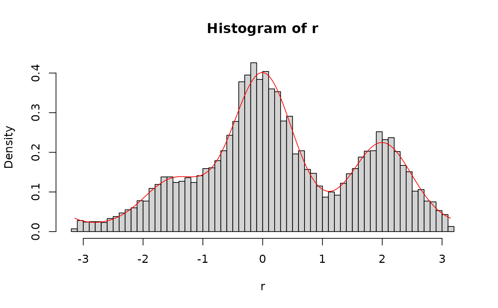

Distribution functions for the Interference Measurement Model (IMM)
Source:R/distributions.R
IMMdist.RdDensity, distribution, and random generation functions for the
interference measurement model with the location of mu, strength of cue-
dependent activation c, strength of cue-independent activation a, the
generalization gradient s, and the precision of memory representations
kappa.
Usage
dimm(
x,
mu = c(0, 2, -1.5),
dist = c(0, 0.5, 2),
c = 5,
a = 2,
b = 1,
s = 2,
kappa = 5,
log = FALSE
)
pimm(
q,
mu = c(0, 2, -1.5),
dist = c(0, 0.5, 2),
c = 1,
a = 0.2,
b = 0,
s = 2,
kappa = 5
)
qimm(
p,
mu = c(0, 2, -1.5),
dist = c(0, 0.5, 2),
c = 1,
a = 0.2,
b = 0,
s = 2,
kappa = 5
)
rimm(
n,
mu = c(0, 2, -1.5),
dist = c(0, 0.5, 2),
c = 1,
a = 0.2,
b = 1,
s = 2,
kappa = 5
)Arguments
- x
Vector of observed responses
- mu
Vector of locations
- dist
Vector of distances of the item locations to the cued location
- c
Vector of strengths for cue-dependent activation
- a
Vector of strengths for cue-independent activation
- b
Vector of baseline activation
- s
Vector of generalization gradients
- kappa
Vector of precision values
- log
Logical; if
TRUE, values are returned on the log scale.- q
Vector of quantiles
- p
Vector of probability
- n
Number of observations to generate data for
Value
dimm gives the density of the interference measurement model,
pimm gives the cumulative distribution function of the interference
measurement model, qimm gives the quantile function of the interference
measurement model, and rimm gives the random generation function for the
interference measurement model.
References
Oberauer, K., Stoneking, C., Wabersich, D., & Lin, H.-Y. (2017). Hierarchical Bayesian measurement models for continuous reproduction of visual features from working memory. Journal of Vision, 17(5), 11.
Examples
# generate random samples from the imm and overlay the density
r <- rimm(10000,
mu = c(0, 2, -1.5), dist = c(0, 0.5, 2),
c = 5, a = 2, s = 2, b = 1, kappa = 4
)
x <- seq(-pi, pi, length.out = 10000)
d <- dimm(x,
mu = c(0, 2, -1.5), dist = c(0, 0.5, 2),
c = 5, a = 2, s = 2, b = 1, kappa = 4
)
hist(r, breaks = 60, freq = FALSE)
lines(x, d, type = "l", col = "red")
